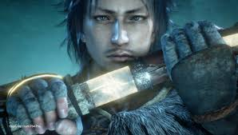
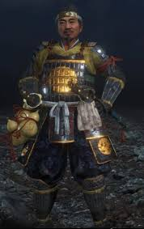
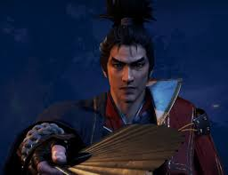
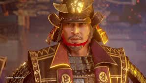
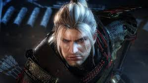

Nioh 2
Nioh 2 é um aclamado RPG de ação estilo soulslike ambientado no Japão feudal infestado por demônios, onde o jogador cria um protagonista personalizável meio humano, meio yokai, enfrentando combates desafiadores e profundos. O combate foca em precisão, gerenciamento de estamina (Ki), esquiva, bloqueio e habilidades de yokai, exigindo adaptação constante. Os mapas são maiores e contêm mais segredos e armadilhas do que o antecessor. A trama mistura fatos e figuras históricas com elementos de fantasia, se desenrolando por meio de vários atos. A campanha principal dura cerca de 44,5 horas, mas completar 100% do jogo pode levar aproximadamente 105 horas. Nas plataformas PS5 e PC, o jogo suporta resoluções até 4K, taxas de quadros de até 120 FPS (no PS5) ou 144Hz (no PC), além de tempos de carregamento ultrarrápidos e a possibilidade de transferir dados salvos da versão PS4.
Personagens:
Hide: é o protagonista principal no videogame de RPG e fantasia sombria Nioh 2. Ele é um guerreiro meio yokai filho de um pai humano e uma mãe yokai chamada Suzuka, ele empunha a Sohayamaru, uma espada com o poder de matar yokai. Hide é um jovem guerreiro japonês de cabelos pretos e olhos castanhos. Embora Hide seja retratado como masculino nos materiais promocionais e na aparência padrão, o jogo permite que os jogadores personalizem a aparência do protagonista, para que os jogadores possam interpretar o gênero de Hide como eles quiserem. Hide é um jovem guerreiro japonês de cabelos pretos e olhos castanhos. Embora Hide seja retratado como masculino nos materiais promocionais e na aparência padrão, o jogo permite que os jogadores personalizem a aparência do protagonista, para que os jogadores possam interpretar o gênero de Hide como eles quiserem.
Tokichiro: Tokichiro é um dos personagens centrais de Nioh 2, servindo como o principal aliado e, posteriormente, um dos antagonistas do protagonista Hide. Ele é um mercador de pedras espirituais (Amrita) ambicioso que se une ao protagonista para subir na hierarquia social do Japão feudal. Juntos, eles compartilham o nome "Hideyoshi".O personagem é baseado em Toyotomi Hideyoshi, uma das figuras mais importantes da história japonesa, conhecido como o segundo "Grande Unificador" do Japão. Ao longo da trama, a ambição de Tokichiro e a influência das pedras espirituais o levam a um caminho de corrupção, transformando-o de um alívio cômico e amigo leal em um líder implacável e perigoso. Como chefe, ele utiliza duas katanas e possui dois Guardiões Espirituais: Masaru (um macaco sagrado) e Yumehami (uma anta devoradora de sonhos), permitindo-lhe usar ataques elementais de fogo e raio.
Mumyo: Mumyo é uma das personagens centrais de Nioh 2, atuando como líder do clã Sohaya, um grupo de caçadores de Yokai. Ela é a guardiã da "Luz de Sohaya", um fragmento de espada sagrada essencial para selar demônios. Inicialmente, Mumyo é hostil ao protagonista (Hide) devido à sua natureza meio-yokai, mas torna-se sua aliada mais próxima ao longo da jornada. O nome "Mumyo" é, na verdade, um título passado de geração em geração entre os líderes do clã Sohaya, e não o seu nome de batismo. Diferente de muitos personagens do jogo baseados em figuras históricas, Mumyo é uma criação fictícia. Sua aparência e voz original em japonês foram modeladas a partir da atriz japonesa Haru. Ela utiliza principalmente a Switchglaive (Glaive de Transmutação), uma arma versátil que muda de forma durante o combate.
Oda Nobunaga: Em Nioh 2, Oda Nobunaga desempenha um papel central como o carismático daimyo que busca a unificação do Japão. Diferente do primeiro jogo, onde aparece como uma figura ressuscitada e enigmática, em Nioh 2 ele é retratado durante sua ascensão, servindo como o senhor feudal e aliado do protagonista Hide e de Tokichiro. Nobunaga recruta o protagonista após a Batalha de Okehazama, valorizando a habilidade de combate sobre a origem social. Ele utiliza o poder das Pedras de Amrita fornecidas por Tokichiro e o sangue Yokai de Hide para expandir sua influência, mas seu objetivo de unificação é interrompido pela traição histórica de Akechi Mitsuhide no Templo Honno-ji. Embora seja um aliado na campanha principal, Nobunaga pode ser enfrentado como chefe em missões secundárias, como "A Lâmina do Rei Demônio" (The Demon King's Blade). Ele utiliza múltiplos elementos através de seus espíritos, destacando-se o pavão Tengen Kujaku, que permite a ele alternar entre ataques de Fogo, Água e Raio. O segredo é esgotar a barra de Ki dele para realizar ataques críticos (grapple). Use ataques pesados em Postura Alta para quebrar sua defesa rapidamente. Ataque-o enquanto ele realiza a animação de invocação do Espírito Guardião para causar dano extra gratuito. Ele geralmente ataca em combos de até três golpes. Espere o terceiro ataque falhar antes de contra-atacar. No final da luta, ele buffa sua arma com múltiplos elementos. Mantenha distância e espere os efeitos dissiparem se não estiver confiante em esquivar.
Akechi Mitsuhide: Em Nioh 2, Akechi Mitsuhide desempenha um papel central na trama como um dos generais mais confiáveis de Oda Nobunaga, antes de se tornar o responsável pelo histórico Incidente de Honno-ji. Mitsuhide é retratado como um estrategista brilhante e usuário de Magia Onmyo que teme que Nobunaga perca o controle ao usar excessivamente as Pedras Espirituais (Amrita) para unificar o Japão. No jogo, sua traição é parcialmente motivada por essa preocupação com o equilíbrio do mundo e por manipulações de forças externas. Após sua derrota na Batalha de Yamazaki, ele não morre; em vez disso, assume a identidade do monge Tenkai, personagem que aparece no primeiro jogo da série. Ele utiliza uma espada e é extremamente proficiente em Magia Onmyo, alternando entre ataques de fogo, água e raio. Seu espírito é o Genbu (uma tartaruga-serpente de água), que ele invoca para criar grandes áreas de efeito no chão.
William Adams: Em Nioh 2, William Adams (o protagonista do primeiro jogo) retorna não como o personagem principal, mas como um importante personagem secundário e chefe. William aparece como o chefe da missão principal "O Samurai de Olhos Azuis" (The Blue-eyed Samurai), a 19ª missão do jogo. Ele luta utilizando uma espada e uma lança, além de invocar seu espírito guardião, Saoirse. Após o confronto, ele se torna um aliado do novo protagonista (Hide), ajudando-o em missões finais e nos conteúdos de DLC. O jogo revela que, após os eventos do primeiro Nioh, William se casou com Okatsu e teve um filho. É possível desbloquear a "Transformação" de William na Casa de Chá Oculta para mudar visualmente seu personagem para ele. Jogadores com dados salvos do primeiro Nioh podiam desbloquear presets de sua aparência na criação de personagem. Assim como no primeiro jogo, o personagem é baseado no navegador inglês real William Adams, que foi o primeiro ocidental a se tornar um samurai no Japão sob o comando de Tokugawa Ieyasu, recebendo o nome japonês de Miura Anjin.
Tutorial:
Para zerar Nioh 2, foque em aprender o Pulso de Ki (R1 no tempo certo) para gerenciar sua energia, utilize a esquiva em vez de bloquear e domine o contra-ataque Yokai (R1+Bola) no brilho vermelho para quebrar o inimigo. Invista em magia (Talismãs de Barreira/Aumento de Dano) e Ninjutsu (Shuriken/Kunai) para facilitar o combate.
Essencial:
1-Combate Técnico: O Pulso de Ki é a mecânica mais importante; não fique sem energia (Ki) ou ficará vulnerável.
2-Armas e Armaduras: A armadura do Traje dos Sorris é recomendada para iniciantes. Mantenha o peso do equipamento sob controle para garantir boa mobilidade (abaixo de 70%).
3-Habilidades e Magia: Utilize o Ferreiro para forjar itens e respecar (reiniciar) níveis com o Livro de Reencarnação. Invista em Magia Onmyo (Talismã de Rejuvenescimento, Barreira e Aço) e Ninjutsu para alto dano.
4-Forma Yokai: Use a forma Yokai (Círculo+Triângulo) em momentos críticos, especialmente com o contra-ataque "Parry" em golpes brilhantes.
5-Evolução (NG+): O jogo tem múltiplos "Sonhos" (New Game+) onde a dificuldade aumenta e itens melhores são liberados.
Vídeo:

Este vídeo explica como criar uma build poderosa no início do jogo.
Vídeo:
Este vídeo mostra o básico de como jogar Nioh 2: